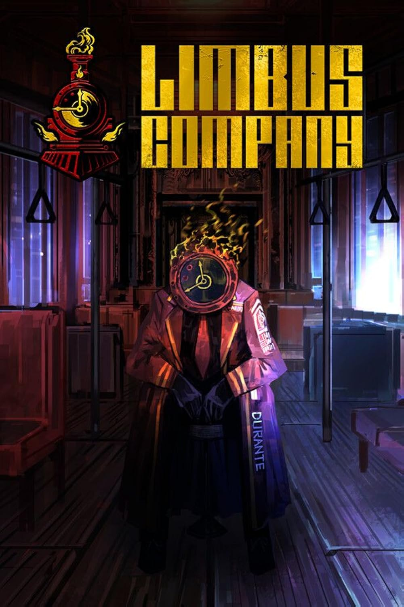

Limbus Company

Limbus Company is a free-to-play, turn-based strategy and role playing video game developed and published by the South Korean studio Project Moon. Explore the city as the clock headed manager Dante, leading a bus full of 12 sinners to collect glowing relics known as Golden Boughs. Encounter eldritch horrors, deep philosopical narratives and delve deep into the inferno through the "Cantos" and "Deviaziones".